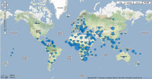

|
The World Economic Outlook (WEO) database contains selected
macroeconomic data series from the statistical appendix of the
World Economic Outlook report, which presents the IMF staff's
analysis and projections of economic developments at the global level, in
major country groups and in many individual countries. The WEO is
released in April and September/October each year.
Use this database to find data on national accounts, inflation,
unemployment rates, balance of payments, fiscal indicators, trade for
countries and country groups (aggregates), and
commodity prices whose data are reported by the IMF.

Data are available from 1980 to the present, and projections are
given for the next two years. Additionally, medium-term projections
are available for selected indicators. For some countries, data are
incomplete or unavailable for certain years.
World Economic Outlook on Google Public Data
Explorer offers select indicators from the latest
online WEO database, such as GDP growth and inflation.
Changes to the October 2014 Database
- The WEO has adopted the sixth edition of the
Balance of Payments Manual and International Investment Position Manual
(BPM6). Notable changes include the following: (1) Merchanting has
been reclassified from services to exports of goods. (2) Manufacturing
services on physical inputs owned by others (goods for processing in the
BPM5) and maintenance and repair services (repairs on goods in the BPM5)
have been reclassified from goods to services. (3) Migrants’ transfers have
been removed from capital transfers in the capital account because a change
in ownership is no longer imputed. (4) Reverse investment in direct
investment has been reclassified so as to present assets and liabilities on
a gross basis. (5) A separate financial derivatives category is now included
in the financial account, whereas previously it was a subitem under
portfolio investment. In addition, the conventional sign for increases in
assets (and liabilities) within the financial account is now positive, and
balances are now computed as net acquisition of financial assets minus net
incurrence of financial liabilities.
- With the adoption of the BPM6, the WEO online database now includes,
where available, the current account balance, imports of goods and services,
exports of goods and services, financial account balance, net direct
investment, net portfolio investment, net financial derivatives, net other
investment, and change in reserves series for all country groups.
Subsequently, the private financial flows series that were available in the
previous versions of the WEO online database have been removed.
- Not all countries have converted to the BPM6 standard and a few still
use versions older than the BPM5. Historical data are subject to change when
countries adopt the latest standard. During this transition period, some
country groups’ aggregates are not available. Please refer to Table G in the
WEO's Statistical Appendix, which lists the Balance of Payments statistical
standard for each country.
- Following the recent release of the 2011 International Comparison
Program (ICP) survey for new purchasing-power-parity benchmarks, the WEO’s
estimates of purchasing-power-parity weights and GDP valued at purchasing
power parity have been updated. For more detail, see “Revised Purchasing
Power Parity Weights” in the
July 2014 WEO Update.
- As in the April 2014 WEO, data for Syria are excluded from 2011 onward
because of the uncertain political situation.
- Because of the ongoing IMF program with Pakistan, the series from which
the nominal exchange rate assumptions can be calculated are not made public,
as the nominal exchange rate is a market-sensitive issue in Pakistan.
- Data for Latvia, which were previously excluded from the euro area
aggregates because of data constraints, are now included.
- Projections for Ukraine, which were previously excluded because of the
crisis, are once again included.
- As in the April 2014 WEO, the consumer price projections for Argentina
are excluded because of a structural break in the data. Please refer to note
5 in Table A7 of the October 2014 WEO Statistical Appendix for further
details.
|